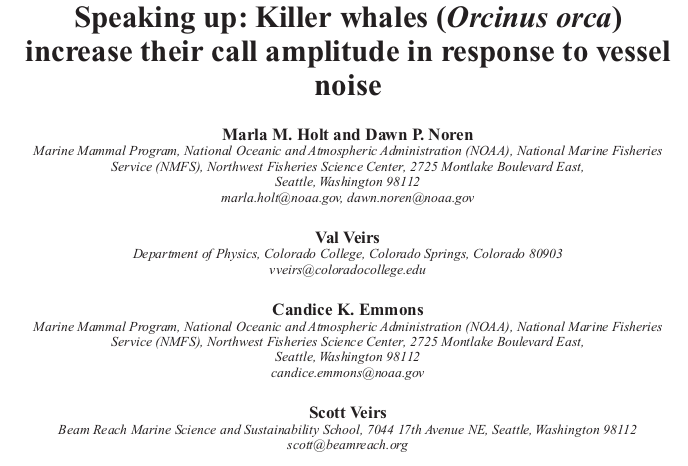

For the past 20 years we have been operating hydrophones in the Salish Sea in an
effort to learn how orca whales use underwater sound.
We have learned the following:
Orca's increase the energy they put into their calls when the ambient noise
around them increases and when there are more boats in their neighborhood.
